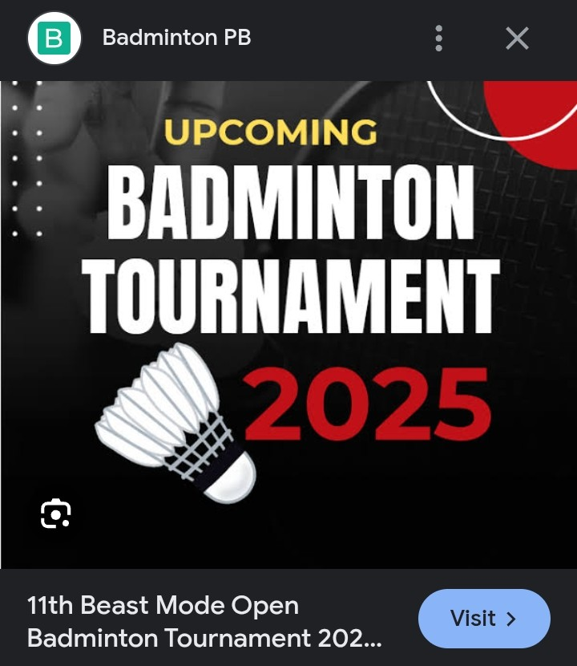
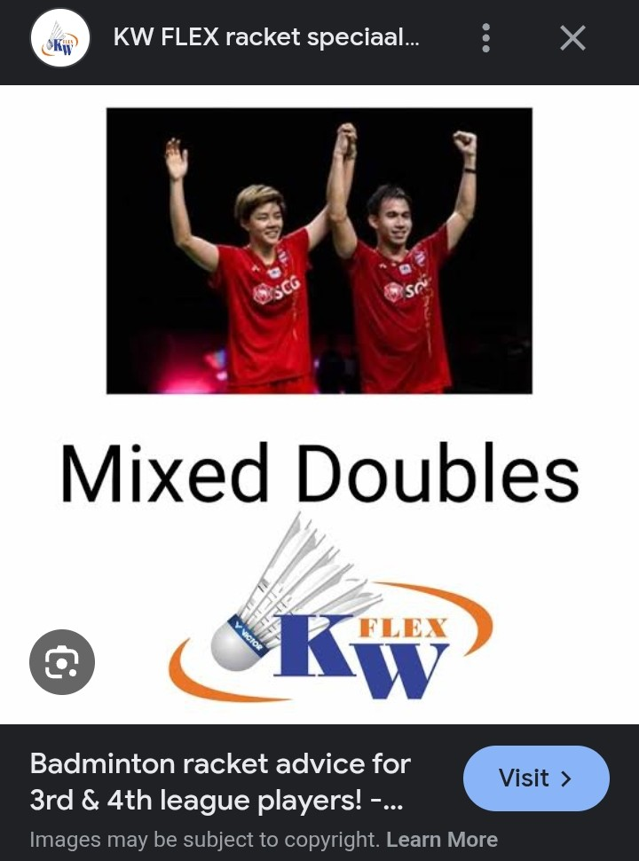

BADMINTON EVENTS

BWF World Tour, World Senior Championships, and the Sudirman Cup.

Mixed doubles badminton follows the same basic rules as regular doubles, with the key difference being one male and one female player on each team.
HOME